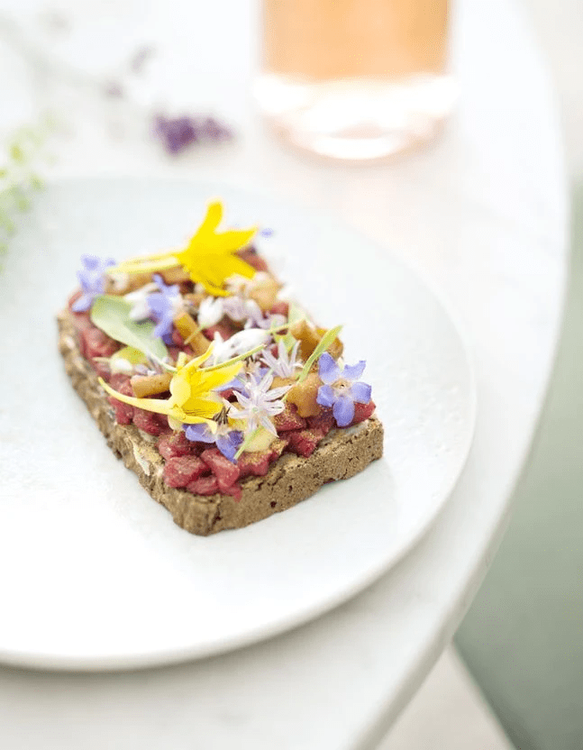

Smørrebrøds tartare de bœuf et champignons

Crédits : Image © Nathalie Carnet | Recette ©
Elle à table
Retour à la page d'accueil
Le tartare de boeuf en version tartine nordique.
Le Smørrebrød est un plat danois traditionnel, consistant en une tartine
ouverte garnie de délicieuses combinaisons d'ingrédients. Cette version
moderne présente un mariage parfait entre le tartare de bœuf frais et les
champignons sautés, créant une explosion de saveurs sur une tranche de
pain de seigle croustillant.
Ingrédients
- 120 g de filet de boeuf
- 2 tranches de pain de seigle
- beurre
- 50 g de champignons pour la poudre de champignon
-
fleurs comestibles (fleurs de bourrache, de cresson de cassis de
ciboulette)
Pour la mayonnaise
- 1 jaune d'oeuf
- 2 cuillère(s) à café de vinaigre
- 20 cl d'huile
Pour les champignons en pickles
- 50 g de champignons
- 10 cl de vinaigre
- 10 g de sucre
Étapes
-
Pour réaliser la poudre de champignon : faites sécher les champignons au
four à 45°/th. 1-2 jusqu’à ce qu’ils soient secs (4-6 h). Mixez jusqu’à
obtention d’une poudre.
-
Pour les champignons en pickles : faites bouillir le vinaigre et le
sucre, versez le tout sur les champignons bien nettoyés.
-
Préparez la mayonnaise : mélangez le jaune d’œuf et le vinaigre. Salez
et poivrez. Incorporez l’huile en filet, en fouettant jusqu’à obtention
d’une mayonnaise. Détaillez le filet de bœuf en petits cubes.
-
Beurrez les tranches de pain de seigle, étalez la mayonnaise, garnissez
de cubes de bœuf, de pickles de champignons et saupoudrez la poudre de
champignon. Parsemez de fleurs comestibles.